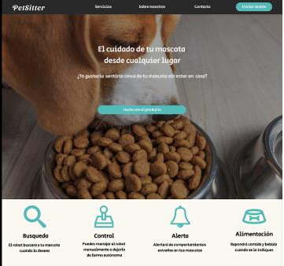
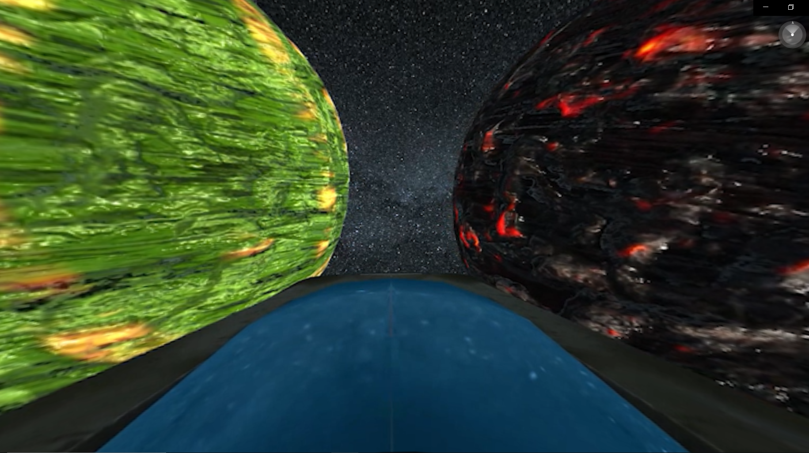

Portafolio personal
Perfil profesional

Iván Villanueva
Profesional con formación técnica y experiencia internacional en el desarrollo de soluciones tecnológicas aplicadas a la automatización de procesos industriales. Destaco por mi capacidad para programar, gestionar bases de datos y colaborar en entornos ágiles con metodologías Scrum. Me motiva la innovación constante, el aprendizaje continuo y el trabajo en proyectos multidisciplinares que demandan habilidades de integración de sistemas, comunicación efectiva y compromiso con los resultados
Experiencia
AUTIS INGENIEROS
Tareas realizadas
- Diseño y construcción de estaciones de automatización industrial para clientes internacionales.
- Programación Backend en LabVIEW para la gestión lógica de procesos industriales y tratamiento de datos estructurados.
- Implementación y mantenimiento de bases de datos relacionales (SQL, MySQL) para proyectos de análisis y gestión.
- Comunicación directa con clientes extranjeros, reforzando habilidades lingüísticas y técnicas.
Formación profesional
Universidad Politecnica de Valencia
- Conocimientos aplicados en lenguajes de programación como Java, JavaScript, HTML, CSS, PHP, Python, etc., orientados a la creación de interfaces dinámicas y adaptables.
- Manejo avanzado de bases de datos relacionales (SQL, MySQL) y experiencia en estructuración de datos en formatos como JSON, XML y CSV, utilizados comúnmente en proyectos EDI.
- Participación en proyectos colaborativos bajo metodologías ágiles como Scrum, con enfoque en integración de datos y control de versiones (Git).
- Introducción a sistemas conectados e IoT, reforzando la comprensión de protocolos de comunicación entre dispositivos y plataformas.
- Capacidad de análisis funcional y técnico en escenarios reales, ideal para el trabajo en entornos internacionales y orientados al cliente.
Proyectos
petsitter

Proyecto de robótica inteligente desarrollado en Python, utilizando el framework ROS2 para la gestión de nodos, sensores y actuadores, e integrado con modelos de machine learning implementados mediante las librerías Keras y TensorFlow.
El sistema permite la identificación automática de mascotas (perros y gatos) a través de técnicas de clasificación supervisada, combinando procesamiento en tiempo real con visión por computadora. Esta solución está orientada a entornos domésticos y de asistencia, y demuestra la viabilidad de integrar aprendizaje profundo en sistemas robóticos distribuidos.
Tecnologias
- Python
- ROS2
- TensorFlow
- Keras
- OpenCV
Nevera inteligente

Proyecto multidisciplinar centrado en el desarrollo de aplicaciones móviles con Java, orientadas a la interacción con sistemas físicos, junto con la implementación de software embebido en microcontroladores mediante C++.
La propuesta integra programación de alto nivel para interfaces móviles con programación de bajo nivel para control de hardware, permitiendo la comunicación eficiente entre dispositivos inteligentes y sistemas embebidos. Se abordan aspectos como la gestión de sensores, la transmisión de datos y la sincronización entre plataformas, con aplicaciones potenciales en domótica, automatización y sistemas IoT.
Tecnologias
- C++
- Java
- Arduino
- Firebase
- MQTT
Planetarium

Proyecto de desarrollo de aplicaciones inmersivas en Unity, centrado en la implementación de experiencias de Realidad Aumentada (RA) y Realidad Virtual (RV) mediante programación en C#.
Se abordan aspectos como el reconocimiento espacial, la integración de interfaces hápticas y la sincronización de sensores, con aplicaciones orientadas a la educación, la simulación técnica y la visualización avanzada de datos.
Tecnologias
- C#
- RV/RA
- Unity
- ARCore
- Vuforia
- SteamVR